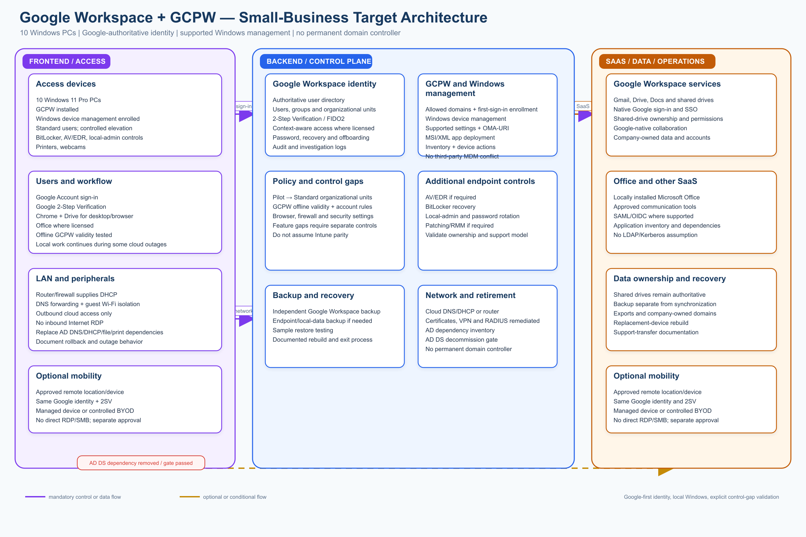
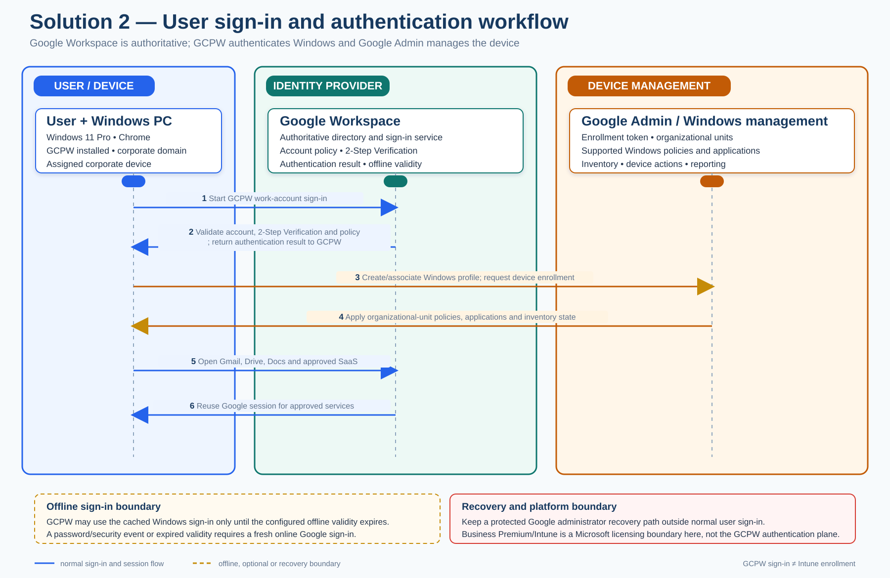

Detailed architecture design, analysis, and comparison
Design scope: 10 Windows PCs, six initial users, small-business LAN, Google Workspace-centered SaaS, Microsoft Office, and removal of the on-premises Active Directory Domain Services (AD DS) server.
Document relationship: This is the detailed design for Solution 2. The authoritative baseline remains requirements.md. Remote work and user/device portability are optional; endpoint security, recovery, data ownership, and AD dependency removal remain mandatory.
1. Executive decision
Google Workspace + Google Credential Provider for Windows (GCPW) + Google Windows device management is a Google-first alternative when Google Workspace is already the company’s dominant platform and Windows requirements are simple. Its cost advantage is conditional: supplemental endpoint controls or a common Microsoft 365 baseline can reduce or eliminate the difference.
Google Workspace becomes the authoritative workforce identity. GCPW lets users sign in to Windows with their managed Google Account. Google Admin console Windows management can apply supported settings, custom OMA-URI settings, selected MSI application deployments, device inventory, and administrative actions.
This option is not a full Active Directory or Intune replacement by default. It must pass a feature-level pilot for encryption and recovery, local-administrator control, antivirus/EDR, Windows patching, application deployment, inventory, reporting, and device retirement. If those gaps require a separate MDM/UEM, endpoint-security, patching, privilege-management, or RMM platform, the apparent simplicity and cost advantage may disappear.
The recommended target for this option is:
- Google Workspace as the authoritative identity and collaboration platform;
- six Microsoft 365 Business Premium with Teams licenses as the common Microsoft portfolio baseline for Office, Defender for Business, and Microsoft identity services, unless an approved reduced-cost exception is documented;
- Microsoft Entra ID P1-level controls and Intune Plan 1 remain included in that bundle but are not the Windows management plane for this option; do not enroll GCPW-managed PCs into Intune unless the business deliberately changes control planes and validates compatibility;
- GCPW installed on supported Windows 11 Pro PCs;
- Google Windows device management enabled and enrolled;
- Google Admin organizational units used for Pilot, Standard, and Exception policies;
- Chrome and Google Drive for desktop managed as core applications;
- Microsoft Office delivered through the approved Business Premium baseline, or through a separately validated license only if that baseline is waived;
- independent endpoint security, backup, and local-administrator controls where Google-native capabilities are insufficient;
- the router/firewall providing DHCP and DNS forwarding after AD DS retirement;
- optional remote work or secondary-device portability enabled only through a separate decision.
Google’s current documentation states that GCPW supports Windows 10/11 Pro, Pro for Workstations, Enterprise, or Education, requires Chrome 81 or later, and is not compatible with third-party mobile-device-management providers. GCPW with Windows device management is edition-dependent and must be confirmed before procurement.
The common Microsoft licensing baseline does not make Microsoft Entra ID the authoritative directory for Solution 2. Google Workspace remains authoritative for user lifecycle, GCPW sign-in, Google SaaS, and Google device management. Microsoft 365 services that are not required by the approved design must not be configured merely because they are included in the bundle.
2. Architecture diagram

Blue paths represent normal identity, management, and data flows. Orange paths represent optional or conditional controls. The “Additional controls” box is intentional: the Google-native Windows feature set must be validated rather than assumed to provide complete Intune-equivalent coverage.
3. Design principles
3.1 Google-first identity
There is one authoritative user lifecycle: Google Workspace. User creation, suspension, password recovery, 2-Step Verification, groups, organizational units, and Google SaaS access are controlled in Google Admin. Windows sign-in uses GCPW against the same managed Google identity.
3.2 Keep Windows local and simple
The physical PCs remain normal Windows endpoints. Users run approved Office applications, Chrome, Google Drive for desktop, communication software, and local peripheral workflows. No AVD session hosts, Azure Files profile containers, or replacement domain controller are introduced.
3.3 Do not overstate endpoint-management coverage
Google Windows management can apply supported settings and custom OMA-URI settings, and it can deploy MSI packages using documented XML and hash values. This does not establish parity with Intune for every Windows security, application, privilege, remediation, reporting, or recovery capability. Each mandatory requirement must be mapped to an implemented and tested control.
3.4 No third-party MDM conflict
GCPW is documented as incompatible with third-party mobile-device-management providers. Do not layer another MDM/UEM over GCPW without explicit vendor validation. Endpoint security, backup, and remote-support products must be evaluated separately and must not take ownership of incompatible management functions.
3.5 Recovery is mandatory; mobility is optional
The business must recover data, administrative access, and a failed PC. Employees do not need to work remotely or use secondary devices unless the business separately approves that capability.
3.6 Five-pillar validation using the Azure Well-Architected lens
The Azure Well-Architected Framework is used here as a technology-neutral quality lens. Solution 2 is Google-first and does not depend on Azure services, but the five concerns still apply to Google Workspace, GCPW, supplemental endpoint controls, SaaS dependencies, and local Windows endpoints.
| Pillar | Assessment | Controls and evidence required before approval |
|---|---|---|
| Reliability | Partial; offline and backup behavior are defined, but outage evidence must be completed | Set the approved RTO/RPO and test first sign-in during an Internet outage, finite offline-validity expiry, password/security-event reauthentication, Google Workspace or backup unavailability, router recovery, device replacement, and local-data restore. Document which work continues offline and do not imply provider-level high availability. |
| Security | Strong control map; detection and response need explicit evidence | Keep 2-Step Verification, FIDO2/passkeys where practical, separate admin and emergency accounts, domain restriction, BitLocker escrow, AV/EDR, firewall, standard-user controls, and no Internet-exposed administration. Add admin-activity review, lost-device/token-revocation handling, incident triage, and documented recovery from a compromised Google account. |
| Cost Optimization | Detailed model; common Microsoft baseline and supplemental-control economics need ongoing review | Track Microsoft 365 Business Premium, Google Workspace entitlement, backup, endpoint-security, RMM, and support costs against the approved monthly ceiling. Review license and device utilization monthly, remove unused controls, and price optional mobility/BYOD separately. Reject a supplemental product when its cost or overlap defeats the Google-first rationale. |
| Operational Excellence | Good rollout and support process; standard ownership and change evidence must be retained | Name a primary and backup operator, keep the Google Admin/GCPW baseline versioned, pilot policy and application changes, document rollback and device unenrollment, and review Google, endpoint, backup, and firewall service health and alerts. Exercise onboarding, offboarding, incident, restore, and replacement-device runbooks. |
| Performance Efficiency | Missing an explicit measurement baseline | Measure first GCPW sign-in and subsequent Windows logon time, policy synchronization, MSI/application deployment, Google Drive/Office/Chrome responsiveness, endpoint CPU/memory/disk, and office bandwidth/latency. Test representative concurrent use and simplify policies or add capacity only when measurements justify it. |
4. Logical architecture
4.1 Google Workspace identity and administration
Google Workspace is the authoritative directory for this option.
Recommended controls:
- one verified corporate domain;
- one named account per employee;
- separate super-administrator accounts for administrative work;
- at least two separately protected emergency administrator accounts;
- organizational units for Pilot, Standard, and Exception device/user policies;
- groups for applications, shared drives, administrators, and exceptions;
- mandatory 2-Step Verification for users and administrators;
- FIDO2/security-key or passkey enforcement where supported and practical;
- context-aware or access policies where included in the selected edition;
- password, recovery, suspension, and offboarding procedures;
- audit and investigation-log retention for the approved period.
Google account ownership must be company-controlled. Do not use personal Gmail accounts for company data, billing, tenant ownership, emergency recovery, or administrative access.
4.2 GCPW layer
GCPW is installed on each corporate Windows PC and configured in Google Admin.
Baseline GCPW settings:
- permit only the company’s approved Workspace domain(s);
- use an organization-specific enrollment token from the Admin console;
- enable automatic enrollment into Windows device management where supported;
- permit only one managed Google user per assigned PC unless a shared-device use case is explicitly approved;
- define an online sign-in validity period rather than allowing indefinite offline access;
- enable automatic GCPW updates after pilot validation;
- document the first-sign-in process and the behavior after a Google password change or security event;
- associate an existing Windows profile only through a tested procedure;
- avoid unmanaged local accounts except for controlled break-glass or recovery purposes.
GCPW’s first sign-in requires Internet connectivity. Subsequent Windows sign-in can work offline, subject to the configured offline validity period and local Windows behavior. This behavior must be tested because a user may otherwise be locked out during an Internet outage or after an account-security event.
User sign-in and authentication workflow

The workflow has one authoritative Google authentication path followed by optional Google device enrollment:
- The user selects the GCPW work-account sign-in option on the corporate Windows PC.
- GCPW sends the sign-in to Google Workspace. Google validates the managed account, domain restriction, password, 2-Step Verification, and applicable access policies.
- Google returns the authentication result to GCPW. GCPW creates or associates the approved Windows profile and starts the user session.
- When automatic enrollment is enabled, GCPW registers the device with Google Windows device management using the approved enrollment token. Google Admin applies the Pilot or Standard organizational-unit settings and approved applications.
- The user opens Gmail, Drive, Docs, and other approved SaaS. The resulting Google session is reused according to the service and browser session policies.
- During a short connectivity outage, GCPW may permit cached Windows sign-in until the configured offline-validity period expires. A password change, security event, or expired validity requires a fresh online Google sign-in.
Microsoft 365 Business Premium is the common licensing boundary for Office and Microsoft security services in this option; it does not replace Google Workspace as the GCPW identity provider. Keep a protected Google administrator recovery path outside normal user sign-in and test it independently.
4.3 Google Windows device-management layer
Enable Windows device management in Google Admin and apply settings through organizational units.
Use the smallest policy set that satisfies the requirements:
| Policy area | Target design |
|---|---|
| Organizational units | Pilot, Standard, and Exception; avoid per-device policy sprawl |
| GCPW settings | Allowed domains, automatic enrollment, account count, offline validity, update behavior |
| Windows settings | Supported security and device settings exposed by Google; custom OMA-URI only where justified |
| Applications | Chrome, GCPW, Drive for desktop, and required MSI packages with version/hash control |
| Inventory | Device identity, last contact, installed applications, and management status |
| Actions | Device sign-out, block/retire actions, and other documented actions supported by the edition |
| Reporting | Google Admin reports plus separate endpoint-security and backup reporting |
Custom settings must be treated as controlled configuration code: record the OMA-URI, data type, value, scope, owner, test result, and rollback action. Google does not assume responsibility for arbitrary third-party settings entered as custom policies.
4.4 Endpoint-security and control-gap layer
The following controls must be proven in the pilot, not inferred from GCPW:
- BitLocker enablement and recovery-key escrow;
- antivirus/endpoint detection and response;
- host firewall enforcement;
- Windows quality and security update deadlines;
- standard-user enforcement and controlled elevation;
- local-administrator password rotation;
- application allow/block and removal behavior;
- remote lock, retire, or wipe behavior;
- device compliance reporting and remediation;
- support-tool security and audit logging.
If Google-native settings cannot satisfy a mandatory control, select one compatible supplemental product or formally redesign the requirement. Avoid building a patchwork of multiple overlapping endpoint platforms.
4.5 Google Workspace data layer
Google Workspace remains the platform for:
- Gmail;
- Google Drive and shared drives;
- Google Docs and related Workspace applications;
- Google-based collaboration and communication.
Required data controls:
- shared drives for business-owned data where appropriate;
- clear ownership and sharing boundaries;
- no business-critical data stored only on one PC;
- independent SaaS backup;
- documented retention, deletion, export, RPO, and RTO;
- periodic restore testing;
- documented provider-exit and administrative-recovery procedures.
Drive for desktop synchronization is not a backup. Offline files and local caches must be treated as endpoint data and protected accordingly.
4.6 Office and other SaaS
Microsoft Office is delivered locally through the approved Microsoft 365 Business Premium baseline. If that baseline is waived, the business must provide and validate a separate Office license; Google Workspace does not provide Microsoft Office licensing.
Other SaaS applications must be inventoried for:
- authentication and SSO support;
- account provisioning and suspension behavior;
- local-data location;
- licensing owner;
- backup and retention;
- dependency on AD security groups, LDAP, Kerberos, NTLM, mapped drives, or service accounts.
GCPW provides Google-account Windows sign-in and Google-service SSO. It does not automatically provide SSO to every non-Google SaaS application.
4.7 Office network layer after AD DS retirement
The router/firewall should provide:
- DHCP scopes and reservations;
- DNS forwarding and local name-resolution rules;
- guest Wi-Fi isolation;
- outbound access required by Google, Microsoft, endpoint-security, backup, and support services;
- VPN or secure remote-support capability only if separately approved;
- firmware, administrator, and firewall-rule management.
RDP, SMB, LDAP, and administrative services must not be exposed directly to the Internet. Any remaining requirement for domain DNS, file shares, certificates, or AD authentication blocks decommissioning until it is resolved.
4.8 Optional mobility branch
Remote work and secondary-device portability are not baseline requirements. If enabled, the user must use the same Google identity, 2-Step Verification, access policy, and offboarding controls. Managed corporate devices are preferred. BYOD requires explicit data-download, session, browser, and revocation controls. Direct inbound access to the office network is prohibited.
4.9 Microsoft 365 and Azure boundary
Microsoft 365 Business Premium with Teams is the common portfolio licensing baseline when Office, Defender for Business, and Microsoft cloud identity services are required. In addition to Entra ID P1-level controls and Intune Plan 1, it includes Office desktop/web/mobile applications, Exchange Online, Teams, SharePoint, OneDrive, Defender for Business, Defender for Office 365 Plan 1, and Purview information-protection/DLP capabilities. Copilot, Intune Plan 2/Suite, Entra ID P2, Azure consumption, Google Workspace, and independent backup are excluded from the baseline license price.
For Solution 2, do not use Intune as a second Windows MDM alongside GCPW. If the common Business Premium baseline is waived, Entra ID Free plus a separately licensed Office/security profile is an approved exception only after documenting the reduced controls: no custom Conditional Access or device-compliance gates, limited self-service password-reset/writeback and enrollment paths, and fewer dynamic, risk, and governance capabilities.
GCPW itself does not require Azure compute, Azure Virtual Desktop, an Azure VM, or an Azure subscription. If the company standard requires a company-owned Azure subscription for Microsoft governance, associate one with the same Microsoft Entra tenant, apply ownership/RBAC/budget/activity-log controls, and keep Azure resource consumption at zero unless a separate workload is approved. Azure VM jumpboxes, Azure Arc, Azure Monitor, and other Azure services remain optional add-ons and must not be introduced to solve a Google-first requirement without a documented benefit.
Optional Azure VM jumpbox or temporary remote server
Use a small hardened Azure VM only for a defined migration or administration purpose. Place it on a private subnet, administer it through Azure Bastion or an approved private VPN with Entra/MFA, do not expose Internet RDP/SSH, apply budgets and automatic shutdown, and remove it at the approved expiry date. This is not a general employee desktop or a replacement for GCPW.
Optional Azure Arc-enabled on-premises hosts
Use Azure Arc only for an on-premises host that must remain during transition or under an approved exception. Apply outbound-only connectivity, least-privilege RBAC, tags, policies, extension allowlists, and an offboarding date. Arc does not replace AD DS or make an on-premises host a cloud service; Update Manager, Monitor, Defender, Sentinel, guest configuration, and log ingestion may create separate charges.
5. User and administrator flows
5.1 First GCPW sign-in and enrollment
See the detailed user sign-in and authentication workflow in section 4.2. The operational sequence is:
- Confirm the PC is supported Windows 11 Pro and has Chrome installed.
- Install GCPW using the organization-specific package or an approved deployment method.
- Configure the allowed Workspace domain and enrollment token.
- User selects the GCPW work-account sign-in option.
- User authenticates with the managed Google Account and completes 2-Step Verification.
- GCPW creates or associates the approved Windows profile.
- If automatic enrollment is enabled, the device enrolls into Google Windows device management.
- Google Admin policies and applications synchronize.
- Administrator verifies device inventory, settings, application installation, endpoint security, encryption, and recovery controls.
5.2 Subsequent sign-in and offline behavior
After the first successful enrollment, the user signs in to the Windows profile normally. If the device is offline, local sign-in may continue until the configured GCPW validity period expires. A Google password change, session expiry, or suspicious-activity event can require a fresh Google sign-in. These cases must be tested with the actual PC image and policies.
5.3 New or rebuilt device
- Verify Windows 11 compatibility, licensing, TPM/Secure Boot state, and hardware ownership.
- Back up and verify recovery of any local data.
- Reset or rebuild the device when practical; this is usually cleaner than retaining unknown domain-profile state.
- Install Chrome and GCPW with the organization token.
- Configure the permitted domain and automatic device-management enrollment.
- Complete the user’s Google sign-in and 2-Step Verification.
- Apply the Pilot or Standard organizational-unit policy.
- Deploy required applications and configure printers, scanners, webcams, Drive, and Office.
- Verify encryption, endpoint protection, local-admin control, updates, inventory, and recovery.
If an existing profile must be retained, use a documented profile-association/data-migration method. GCPW does not automatically convert every AD domain profile into a clean Google-managed operating model.
5.4 Administrator flow
- Administrator uses a separate Google super-admin or delegated admin account with 2-Step Verification.
- Administrative work is performed through Google Admin, backup, endpoint-security, firewall, and approved support portals.
- Local elevation uses the approved recovery or support process.
- Policy and application changes are tested in the Pilot organizational unit.
- Device, sign-in, application, threat, and backup status are reviewed on the agreed schedule.
5.5 Offboarding flow
- Suspend the user’s Google Workspace account.
- Revoke sessions and tokens and remove group/application access.
- Block or retire the associated PC through the supported device-management action.
- Preserve or transfer business data according to the documented ownership and retention process.
- Recover company assets, local administrator information, and backup records.
5.6 Optional remote-work flow
This flow is used only if separately approved. The user connects from an approved managed device or controlled BYOD path, authenticates with Google and 2-Step Verification, and accesses Google Workspace and approved SaaS directly. Remote performance, browser/data controls, token revocation, and lost-device response must be tested before enablement.
6. Security and management baseline
| Control | Baseline requirement | Validation concern |
|---|---|---|
| Identity | Individual Google Workspace accounts; no routine shared accounts | Confirm ownership and recovery contacts |
| Authentication | 2-Step Verification for users and administrators; FIDO2/passkeys where practical | Test GCPW login and recovery behavior |
| Administration | Separate admin accounts and at least two emergency accounts | Do not make both emergency accounts dependent on one policy or device |
| GCPW domain restriction | Only approved corporate domains may sign in | A missing domain setting blocks GCPW sign-in |
| Offline access | Configure a finite online sign-in validity period | Test Internet outage and expired validity behavior |
| Account count | One managed user per assigned PC unless a shared-device exception is approved | Windows device management enrollment is limited per device |
| Windows version | Supported Windows 11 Pro or approved edition | Windows 10 requires a documented retirement or temporary ESU plan |
| Encryption | BitLocker enabled and recovery keys escrowed | Google-native key escrow must be proven or supplemented |
| Endpoint security | AV/EDR and firewall centrally enforced | Do not assume GCPW is an EDR product |
| Updates | Windows quality/security updates within the approved deadline | Confirm reporting and failed-update remediation |
| Privilege | Standard user and controlled elevation | Confirm local-admin/password-rotation capability |
| Applications | Required MSI applications use documented URL, product ID, hash, and rollback | Test non-MSI and complex application needs separately |
| Inventory | Devices and installed applications are reviewable | Confirm reporting delay and completeness |
| Backup | Independent Google Workspace and local-data backup | Synchronization is not backup |
| Network | Router/firewall DHCP/DNS, guest isolation, outbound-only cloud access | No Internet-exposed RDP/SMB/LDAP |
| Logging | Google audit/investigation logs plus endpoint, backup, and firewall logs | Define retention and review responsibility |
7. AD DS dependency-removal gate
The domain controller must not be demoted until evidence shows that:
- no application uses LDAP, Kerberos, NTLM, AD groups, domain service accounts, or domain membership;
- DNS has moved to the router/firewall or another approved design;
- DHCP has moved and reservations have been tested;
- file shares, mapped drives, and redirected folders have migrated or been retired;
- printers, scanners, and local peripherals work without domain-dependent credentials;
- certificate services and auto-enrollment dependencies are removed or replaced;
- VPN/RADIUS, scripts, scheduled tasks, Windows services, backup agents, and support tools no longer depend on AD DS;
- all users can sign in through GCPW and access Google Workspace, Office, communication tools, and required peripherals;
- the Google Workspace backup and a sample local-data restore have passed;
- the selected endpoint-security and privilege controls are active and reportable;
- rollback and stabilization criteria are satisfied.
8. Migration implementation plan
Time estimate
The following is a planning estimate for six initial users and up to 10 Windows PCs. Effort is hands-on implementation labor; elapsed time includes user acceptance, vendor/licensing decisions, migration batches, change windows, and stabilization. The clean-environment total aligns with the 30–46 hour budgetary range in section 10 and includes the common Microsoft 365 Business Premium licensing and tenant-foundation checks. Profile migration, supplemental endpoint controls, custom settings, MSI packaging, or application remediation can increase the effort to approximately 42–62 hours.
| Phase | Effort | Indicative elapsed time |
|---|---|---|
| Phase 0 — Discovery and feasibility | 4–6 hours | 2–5 business days |
| Phase 1 — Google Workspace and Microsoft 365 foundation | 5–7 hours | 2–5 business days |
| Phase 2 — GCPW and Windows-management pilot | 6–10 hours | 1–2 weeks |
| Phase 3 — Security and control-gap validation | 5–8 hours | 1–2 weeks |
| Phase 4 — Profile and data migration | 4–6 hours | 1–2 weeks |
| Phase 5 — Production rollout | 2–3 hours | 1–2 weeks |
| Phase 6 — Network and service migration | 2–3 hours | 3–5 business days |
| Phase 7 — Stabilization and AD DS decommissioning | 2–3 hours | 1–2 weeks |
| Total implementation effort | 30–46 hours | Approximately 5–9 weeks |
The elapsed range assumes one implementation owner working part time and does not include hardware procurement, licensing-approval delays, major application redevelopment, or ongoing managed support.
Phase 0 — Discovery and feasibility
- inventory AD users, groups, computers, GPOs, DNS, DHCP, file, print, certificates, VPN/RADIUS, scripts, scheduled tasks, and service accounts;
- inventory each PC’s Windows edition/build, hardware, TPM/Secure Boot, applications, peripherals, local data, and current profile;
- confirm the Google Workspace edition and whether it supports GCPW with Windows device management;
- map every mandatory endpoint requirement to a Google-native control or a compatible supplemental control;
- confirm the six-user Microsoft 365 Business Premium with Teams baseline, or document the reduced-cost exception and its missing controls;
- confirm the company-owned Microsoft 365 tenant, verified domain, billing owner, and recovery contacts; if an Azure subscription is required by the company standard, confirm its association and governance boundary;
- confirm backup, endpoint-security, and support entitlements;
- record whether remote work and secondary-device portability are deferred or separately desired.
Exit criteria: no mandatory requirement remains marked “assumed,” and no incompatible third-party MDM is included.
Phase 1 — Google Workspace and Microsoft 365 foundation
- verify the company domain and tenant ownership;
- establish named users, groups, organizational units, admin roles, and emergency accounts;
- provision or verify the company-owned Microsoft 365 tenant and assign six Microsoft 365 Business Premium with Teams licenses as the common baseline;
- do not add standalone Intune Plan 1 or Entra ID P1 licenses on top of Business Premium;
- if the Business Premium baseline is waived, record the Entra ID Free/standalone Office and security exception and its reduced-control impact;
- enforce 2-Step Verification and configure recovery methods;
- configure audit/investigation logging and administrator alerts;
- define shared-drive ownership and data-retention rules;
- select and configure independent Workspace backup.
Phase 2 — GCPW and Windows-management pilot
- enable Windows device management for the Pilot organizational unit;
- configure permitted domains, enrollment token, automatic enrollment, account count, offline validity, and GCPW update behavior;
- install GCPW and Chrome on one non-critical PC;
- confirm first sign-in, subsequent sign-in, password change, offline sign-in, security-event reauthentication, device inventory, and policy synchronization;
- test one required MSI deployment and one custom setting;
- document rollback and device unenrollment behavior.
Phase 3 — Security and control-gap validation
- verify BitLocker and recovery-key handling;
- verify AV/EDR, firewall, update enforcement, local-admin control, password rotation, and device retirement;
- add one compatible supplemental product only where a mandatory gap is proven;
- test Google Workspace backup and local endpoint backup;
- test printers, scanners, webcams, Drive for desktop, Office, and communications applications.
Phase 4 — Profile and data migration
- back up each PC and verify the restore path;
- choose clean rebuild versus profile association based on pilot evidence;
- migrate approved local data and browser/application settings;
- validate Google Drive ownership, shared-drive access, local cache behavior, and offline files;
- document the user and device mapping.
Phase 5 — Production rollout
- migrate one or two PCs per batch;
- assign Standard policies only after the pilot is accepted;
- maintain a migration ledger with user, PC, date, profile/data method, applications, and acceptance result;
- keep the AD server available for rollback until the stabilization period ends.
Phase 6 — Network and service migration
- move DHCP and DNS to the router/firewall or approved managed service;
- migrate or retire file shares, print queues, certificates, VPN/RADIUS, scripts, scheduled tasks, and service accounts;
- verify normal operation from every production PC without AD connectivity.
Phase 7 — Stabilization and AD DS decommissioning
- review Google, endpoint-security, backup, device, and network alerts;
- execute a controlled domain-controller shutdown test;
- resolve any critical dependency before demotion;
- demote and remove AD DS only after the gate passes;
- retain the approved backup and finalize operating documentation.
Optional value-add work packages
The following work is excluded from the 30–46 hour baseline and is performed only after separate approval. GCPW-managed Windows devices must not be moved to Intune or Windows Autopilot as an incremental feature; that would be a control-plane change requiring a new design and pilot.
- SharePoint/Teams operating hub: create a small Microsoft 365 hub for procedures, templates, forms, or Microsoft-owned content; plan approximately 6–12 additional hours, with a documented relationship to Google Shared drives.
- Power Automate standard workflow: automate a lightweight approval, reminder, onboarding, or exception process using approved standard connectors; plan approximately 2–4 additional hours per workflow. Premium connectors, Google integrations, gateways, RPA, and AI Builder require separate licensing review.
- Microsoft 365 Copilot Chat enablement: review sharing/privacy settings, publish safe-use guidance, and run a short web-based pilot; plan approximately 2–4 additional hours.
- Microsoft 365 Copilot pilot: assign the separate add-on to one or two users, validate Microsoft 365 data permissions, train users, and measure outcomes; plan approximately 4–8 additional hours, excluding license fees. It does not ground on Google Workspace data by default.
- Copilot Studio internal FAQ agent: curate a controlled source, build the agent, configure authentication and escalation, test answers, and document ownership; plan approximately 8–16 additional hours, excluding usage or license fees.
- Mobile application management: control approved Microsoft mobile applications for BYOD or remote work without managing the personal device; plan approximately 4–8 additional hours. This does not replace GCPW for Windows PCs.
- Azure VM jumpbox/temporary remote server: if a specific administrative or migration need exists, configure a private, time-limited VM with Bastion/VPN, Entra/MFA/RBAC, budgets, shutdown, and removal controls; plan approximately 6–12 additional hours, excluding Azure consumption.
- Azure Arc-enabled retained host: if a specific on-premises host must remain, install and govern the Connected Machine agent, enable only approved extensions, test management actions, and document offboarding; plan approximately 4–8 additional hours for one to three simple hosts, excluding service consumption.
Implementation deliverables and completed end state
After rollout and stabilization, the selected Solution 2 implementation will deliver:
| Deliverable | Completed outcome |
|---|---|
| Google identity and Windows control plane | Company-owned Google Workspace identity, GCPW, Google Windows device-management policies, organizational units, enrollment, offline-validity, and tested recovery procedures |
| Common Microsoft platform baseline | Six Microsoft 365 Business Premium with Teams licenses, where approved, with Office, Defender, Entra tenant ownership, and documented non-use of Intune as a competing MDM |
| Managed Windows estate | Up to 10 supported Windows 11 PCs with tested encryption, endpoint security, updates, standard-user controls, application deployment, inventory, and recovery |
| Data protection | Google Shared drive ownership, independent Workspace backup, local endpoint backup, retention, RPO/RTO, restore evidence, and provider-exit procedures |
| AD DS retirement | DNS/DHCP and other dependencies transferred or remediated; domain controller demoted and retired after the dependency gate |
| Optional value-adds, if approved | SharePoint/Teams hub, workflows, Copilot guidance/pilot, FAQ-agent ownership, MAM, or approved Azure governance/hybrid add-on evidence |
| Handover package | Architecture, configuration register, migration ledger, control-gap exceptions, runbooks, support contacts, cost/license register, rollback record, and acceptance sign-off |
9. Operating model
Routine operations
- review Google sign-in, audit, device, application, endpoint-security, and backup alerts;
- process joiners, movers, and leavers through documented checklists;
- review stale devices and failed policy/application sync;
- review GCPW and Chrome versions after pilot validation;
- review license assignments and backup status monthly;
- perform periodic restore tests;
- review emergency accounts and recovery contacts.
Change management
- pilot every GCPW, Windows custom setting, MSI package, and supplemental-agent change;
- record the OMA-URI, value, scope, owner, test result, and rollback action;
- avoid policy duplication between Google and any supplemental product;
- remove obsolete settings and licenses;
- do not use unsupported custom settings as an undocumented substitute for a security product.
Support model
The environment should be supportable by a part-time internal owner or qualified external administrator. Remote administration is required for operational efficiency; employee remote work is optional. Direct exposure of Windows administrative services to the Internet is prohibited.
10. Licensing and cost model
The Google Workspace edition must be confirmed before approving this option. Google’s current documentation distinguishes standalone GCPW support from GCPW combined with Windows device management. The combined feature is edition-dependent and includes Business Plus, selected Enterprise, Enterprise Essentials, and Cloud Identity Premium editions; the exact entitlement must be verified against the current tenant and quote.
Common baseline and Google-first exception profile
The common portfolio baseline is six Microsoft 365 Business Premium with Teams licenses. In Solution 2, Business Premium supplies Office, Defender for Business, and the Microsoft tenant/licensing boundary; Google Workspace remains authoritative for identity, GCPW sign-in, Google collaboration, and Google Windows device management. Intune is included in the license but is not activated as a competing Windows MDM.
If the business wants the lowest possible Google-first cost, it may waive the common Microsoft baseline and use separately licensed Office and compatible endpoint-security tools. That is a documented exception profile, not the portfolio baseline, and its missing controls and license coverage must be recorded.
Baseline and optional subscription profile
| Baseline or optional item | Current planning price | Six-user planning cost | Scope and notes |
|---|---|---|---|
| Microsoft 365 Business Premium with Teams (common baseline) | CAD 29.80/user/month, annual commitment | CAD 178.80/month or CAD 2,145.60/year | Provides Office, Defender for Business, Entra ID P1-level controls, and Intune Plan 1. Intune is not used as the GCPW Windows control plane. Copilot is excluded. |
| Microsoft 365 Business Premium without Teams (optional) | CAD 25.50/user/month, annual commitment | CAD 153.00/month or CAD 1,836.00/year | Use only when Teams is not required and the no-Teams profile is approved. |
| Microsoft Entra ID Free (optional exception) | CAD 0/user/month | CAD 0/month | Reduced-control Microsoft identity profile; not a replacement for Google Workspace identity or GCPW. |
| Optional Google Workspace edition with GCPW/device management | Optional; price excluded | CAD 0 included cost | Required entitlement if Solution 2 is selected, but the Google license fee is excluded from this comparison calculation. Confirm the edition before procurement. |
| Azure subscription (optional governance boundary) | No fixed subscription fee; pay-as-you-go for Azure resources | CAD 0 fixed | Not required by GCPW. If created under the company standard, keep Azure resources at zero unless separately approved. |
| Independent Google Workspace and endpoint backup | CAD 50–100/month planning allowance | CAD 50–100/month | Required independent backup; synchronization is not backup. |
| Supplemental endpoint-security/RMM/privilege tooling | Separate quote | Excluded | Add only where Google-native controls fail a mandatory requirement. |
The Google Workspace fee is excluded from the model, but the required Google entitlement cannot be omitted from an actual Solution 2 deployment. Add its price back if it is not already funded or covered by the approved commercial assumption.
Microsoft 365 Business Premium included services
In addition to Entra ID P1-level controls and Intune Plan 1, the common Business Premium with Teams baseline includes Office desktop/web/mobile applications, Exchange Online, Teams, SharePoint, OneDrive, Defender for Business, Defender for Office 365 Plan 1, Purview information protection/DLP, and related productivity services. These services are available for approved use, but Solution 2 must not duplicate Google Workspace repositories or identity workflows without a documented purpose.
Cost discipline
- do not upgrade or change the Google Workspace edition solely by assumption; verify the GCPW/device-management entitlement;
- do not purchase standalone Intune Plan 1 or Entra ID P1 on top of Business Premium;
- do not purchase a second MDM/UEM product that conflicts with GCPW;
- do not treat Google Drive synchronization as backup;
- price endpoint security, local-admin control, patch reporting, support tooling, and backup separately;
- treat Copilot, Copilot Studio, premium Power Automate connectors, Azure monitoring, Arc, and VM consumption as optional add-ons;
- identify the incremental cost of optional mobility or BYOD separately.
Entra ID Free has no separate per-user fee, but it lacks custom Conditional Access and device-compliance gates, some self-service password-reset/writeback and enrollment paths, dynamic groups, and advanced risk/governance controls. It is not required for Google-first identity and should be treated as a Microsoft-side exception only.
Budgetary effort
For a clean 10-device environment with simple applications, budget approximately 30–46 implementation hours. Allow approximately 42–62 hours when profile migration, custom OMA-URI settings, MSI packaging, application remediation, or supplemental endpoint tooling is required. This excludes major hardware replacement, formal compliance work, complex application redevelopment, and ongoing managed support.
Main cost drivers
- Microsoft 365 Business Premium with Teams as the common baseline;
- optional Google Workspace edition or provisioning changes; its license fee is excluded from the comparison calculation;
- endpoint-security/EDR;
- independent Google Workspace and endpoint backup;
- local-administrator/password-rotation or patching tooling;
- remote-support tooling;
- Windows 11 hardware replacement;
- optional mobility or BYOD controls.
Standard deployment, operational, and maintenance budget
For a comparable six-user/10-device planning model, use Canadian dollars before tax and annual commitments where available. “Deployment” is one-time professional services. “Operational” is recurring licensing, cloud, endpoint-tooling, and backup cost and excludes support labor. “Maintenance” is routine administration at CAD 125–150/hour and excludes incidents, major projects, hardware replacement, and vendor support contracts.
| Cost category | Standard planning amount |
|---|---|
| One-time deployment | CAD 3,750–6,900 for 30–46 hours; profile migration, custom settings, application packaging, or supplemental tooling can increase this range. |
| Recurring operational cost | CAD 228.80–278.80/month for the common Microsoft 365 Business Premium with Teams baseline plus independent backup. Google Workspace is required if Solution 2 is selected but its license fee is excluded from this calculation; supplemental endpoint/RMM tooling is also excluded. |
| Routine maintenance | CAD 375–900/month for approximately 3–6 hours of endpoint inventory, GCPW/device-policy review, patch and security review, onboarding/offboarding, backup checks, and recovery testing. |
| Excluded or optional items | Google Workspace license fee, Copilot, Copilot Studio, premium Power Automate, supplemental endpoint/RMM tools, Azure consumption, hardware replacement, Internet service, optional dual-WAN/5G or UPS, major application work, incident response, and vendor support contracts. |
Optional value-adds are excluded from the maintenance range. For one to three lightweight capabilities such as a SharePoint hub, standard workflows, MAM, or a Copilot pilot, allow approximately 1–3 additional hours/month for ownership, content, exception, and usage review.
Optional Azure add-on cost treatment
| Optional add-on | Cost treatment and planning rule |
|---|---|
| Azure VM jumpbox or temporary remote server | No fixed license line; add VM compute, disks, network, Bastion/VPN, backup, monitoring, and log-ingestion consumption. Use automatic shutdown and delete the resources at expiry. |
| Azure Arc-enabled on-premises hosts | Basic Arc connection and Azure resource organization are generally offered at no additional charge; Update Manager, Monitor, Defender, Sentinel, guest configuration, Windows Server pay-as-you-go, log ingestion, and storage may add per-server or consumption charges. |
These Azure add-ons are excluded from the CAD 228.80–278.80/month Google-first comparison baseline and the 30–46 hour implementation estimate.
11. Comparison with the other proposed solutions
The comparison uses the updated requirements, where remote work and user/device portability are optional.
| Criterion | Solution 1: Entra ID + Intune | Solution 2: Google + GCPW | Solution 3: AVD |
|---|---|---|---|
| Authoritative identity | Entra ID | Google Workspace | Entra ID, with hosted desktops |
| Windows sign-in | Native Entra join | GCPW Google-account sign-in | Hosted-session sign-in |
| Windows endpoint depth | Strongest native Windows control | Conditional; feature coverage must be tested | Strong for session hosts, but terminals also need management |
| Google Workspace alignment | Good through SAML/provisioning | Best native alignment | Indirect and more complex |
| Local Windows productivity | Preserved | Preserved | Not the primary model |
| Application deployment | Broad Intune packaging and policy model | MSI/custom-setting model; validate non-MSI apps | Centralized image/app model |
| Privilege, EDR, recovery | More complete when licensed | May require supplemental products | Requires host, profile, and terminal controls |
| MDM compatibility | Native Microsoft stack | GCPW conflicts with third-party MDM/UEM | Separate AVD/endpoint management stack |
| Simplicity | Moderate | Lowest if requirements are basic | Lowest |
| Recurring cost | Moderate | Potentially lowest when Google and supplemental controls are already funded | Highest and consumption-sensitive |
| Office Internet outage | Some local productivity can continue | Some local productivity can continue after sign-in | Hosted work may be unavailable |
| Optional remote work | Supported if enabled | Supported if enabled and controlled | Strong capability but not baseline-required |
| Suitability for this baseline | Preferred for Windows control | Conditional low-cost alternative | Exception only |
When Solution 2 is appropriate
Select this option only if the pilot proves that:
- the existing or approved Google edition includes the required Windows-management features;
- all mandatory endpoint controls are available or covered by one compatible supplemental product;
- GCPW’s third-party-MDM incompatibility is acceptable;
- no application requires AD DS, LDAP, Kerberos, NTLM, domain membership, or mapped-drive dependencies;
- Office, Drive, printers, scanners, and communications tools work reliably;
- the organization accepts Google Admin as the primary Windows-management console;
- the lower cost and Google alignment justify the weaker Windows-management depth relative to Intune.
Why Solution 1 remains stronger for risk reduction
The mandatory baseline requires centrally enforced encryption, security, updates, privilege control, application repeatability, inventory, device actions, and reporting. Intune is designed around those Windows controls. Solution 2 may satisfy them, but the organization must prove more through testing and may need additional products.
When AVD should be selected instead
AVD should be considered only when a legacy application, centralized desktop requirement, terminal-only PC model, minimized local data, or approved mobility requirement justifies its additional infrastructure and administration.
12. Risks and mitigations
| Risk | Impact | Mitigation |
|---|---|---|
| GCPW is mistaken for a complete AD/GPO replacement | Missing Windows controls or hidden dependencies | Map every mandatory requirement to a tested control |
| Required Windows-management feature is not included in the current edition | Rework or unexpected licensing cost | Confirm edition entitlement before pilot |
| Third-party MDM is introduced alongside GCPW | Enrollment or policy conflict | Do not deploy another MDM/UEM without explicit compatibility evidence |
| GCPW first sign-in requires Internet | New or rebuilt users cannot sign in during an outage | Keep a controlled recovery process and test offline behavior |
| Offline validity is indefinite or too short | Security exposure or user lockout | Configure and test a finite validity period |
| Local-admin, BitLocker, EDR, or patch controls are incomplete | Endpoint compromise or recovery failure | Add one compatible supplemental control or reject the option |
| MSI/custom-setting deployment is insufficient | Applications cannot be installed or updated consistently | Inventory app types and pilot packaging before selection |
| Existing AD profile is retained incorrectly | Data loss, duplicate profile, or permissions problems | Prefer clean rebuild or use a tested profile-association process |
| Google password reset behavior is misunderstood | Windows sign-in or user recovery failure | Document and test reset, security-event, and emergency flows |
| Google Drive is treated as backup | Data cannot be restored after deletion or corruption | Use independent backup and sample restores |
| Optional mobility expands scope | More cost and security exposure | Separate approval, budget, owner, and acceptance test |
| Business Premium and Google create duplicate identity or collaboration paths | Higher cost, conflicting ownership, or user confusion | Keep Google authoritative for GCPW and Google data, assign Business Premium only for approved Microsoft services, and document the source of truth |
| Intune or Autopilot is layered onto GCPW without a control-plane decision | Device enrollment or policy conflict | Keep Google device management as the Windows control plane or formally redesign and repilot the solution |
| Copilot or a chatbot uses overshared or inaccurate information | Confidentiality risk or incorrect business advice | Review Microsoft 365 permissions, use curated sources, require human review, and assign an owner and escalation path |
| Optional workflows or Azure services become unsupported | Silent failures, cost growth, or fragmented support | Use standard connectors first, add owners and alerts, set budgets, and review optional services monthly |
13. Acceptance criteria
The design is accepted only when:
- all production users can sign in to supported Windows 11 PCs through GCPW;
- the approved Microsoft 365 Business Premium with Teams baseline is assigned, or the reduced-cost exception documents Office, identity, security, and missing-control impacts;
- 2-Step Verification and emergency-account recovery have been tested;
- all retained PCs are inventoried and show the expected management state;
- encryption, endpoint security, firewall, updates, local-admin controls, and recovery keys are active and reportable;
- required Google Workspace, Office, communication, printing, scanning, and peripheral workflows pass user acceptance;
- required applications are repeatably installed and updated, or a documented compatible supplemental tool is approved;
- user and shared data ownership is correct, independent backup is active, and sample restoration passes;
- onboarding, offboarding, device replacement, and support procedures are documented and tested;
- DNS, DHCP, file, print, certificate, VPN, RADIUS, LDAP, Kerberos, NTLM, script, scheduled-task, and service-account dependencies are replaced or proven unused;
- no Internet-exposed RDP, SMB, LDAP, or administrative service is required;
- if a company-owned Azure subscription is created, it is associated with the approved Microsoft Entra tenant and has ownership, RBAC, budget, alert, policy, and activity-log controls tested;
- rollback and stabilization criteria are satisfied;
- the domain controller is demoted cleanly and retained backups meet the approved policy;
- recurring cost and supplemental-tool count remain within the approved limits;
- any approved SharePoint/Teams hub, workflow, Copilot, FAQ agent, MAM, or Azure add-on has an owner, acceptance evidence, cost boundary, and support procedure;
- remote work and user/device portability are tested only if separately enabled; they are not baseline acceptance conditions.
14. Decisions required before implementation
- Confirm Google Workspace as the authoritative workforce identity.
- Confirm the current Google Workspace edition and GCPW-with-Windows-management entitlement.
- Approve six Microsoft 365 Business Premium with Teams licenses as the common Microsoft baseline, or approve the reduced-cost exception and document its limitations.
- If an Azure subscription is created for portfolio governance, approve its company ownership, tenant association, billing owner, RBAC, budget, resource scope, and support contacts.
- Decide whether Windows device management will be enabled for all devices or only selected organizational units.
- Confirm the GCPW domain restriction, offline validity period, automatic enrollment, and one-user-per-PC policy.
- Confirm the exact controls available for BitLocker, AV/EDR, firewall, updates, local-admin rotation, device actions, inventory, and application deployment.
- Decide whether one compatible supplemental endpoint-security or RMM product is required.
- Confirm Microsoft Office licensing and deployment method.
- Confirm independent Google Workspace and endpoint backup.
- Decide whether Google Workspace or Microsoft 365 is authoritative for each content category before enabling work-grounded Copilot or a knowledge agent.
- Approve any optional SharePoint/Teams hub, standard workflows, Copilot pilot, Copilot Studio agent, MAM, or Azure governance/hybrid add-on with a named owner and success measure.
- Confirm Windows 11 compatibility and replacement schedule for every PC.
- Confirm router/firewall ownership of DHCP and DNS after AD DS retirement.
- Confirm every file, print, certificate, VPN/RADIUS, script, scheduled-task, and service-account dependency.
- Decide whether remote work, BYOD, or secondary-device portability is deferred or separately enabled.
- Approve the monthly operating-cost ceiling, implementation effort range, RTO, RPO, rollback window, and stabilization period.
15. References
- Install Google Credential Provider for Windows
- Microsoft 365 Business Premium pricing in Canada
- Microsoft 365 Copilot Chat requirements
- Microsoft Copilot licensing options
- Power Automate licensing
- Copilot Studio billing and consumption
- Microsoft Defender for Business overview
- Azure subscription and Microsoft Entra tenant relationship
- Azure Bastion documentation
- Azure Arc-enabled servers overview
- Azure Update Manager overview
- Azure Arc pricing
- Google Workspace pricing in Canada
- Sign in to Windows after GCPW installation
- Enable Windows device management
- Device requirements for Google endpoint management
- Custom settings for Windows 10 or 11 devices
- Install apps on Windows devices with custom settings
- GCPW FIDO2 security-key support
- Azure Well-Architected Framework pillars
- Windows 10 support lifecycle